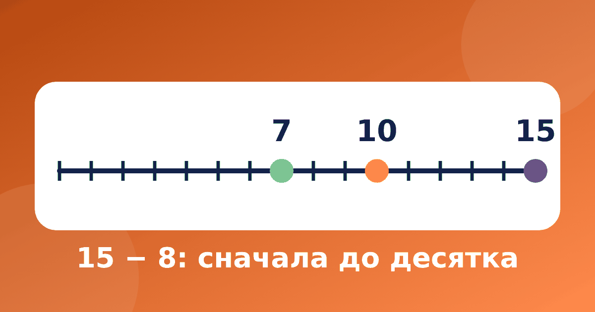

Вычитание с переходом через десяток: два способа для первоклассника

Вычитание через десяток, например 15 − 8, первоклассникам обычно даётся труднее всего: единиц в уменьшаемом не хватает, и ребёнок начинает путаться. Хорошая новость в том, что у вычитания с переходом через десяток есть два простых способа, и достаточно выбрать тот, что ближе вашему ребёнку. Разберём оба на примерах и покажем, какие ошибки встречаются чаще всего.
Что нужно знать до начала
Перед вычитанием в пределах 20 проверьте две вещи. Первая: состав чисел до 10, о нём написано в статье состав числа до 10. Вторая: сколько не хватает до десяти, об этом говорится в статье про дополнение до 10. Например, ребёнок должен сразу сказать, что 8 это 5 и 3, а до 10 числу 8 не хватает 2. Без этого вычитание превращается в счёт по пальцам.
Способ 1: вычитаем по частям
Вычитаемое разбиваем так, чтобы сначала дойти до круглого числа. Пример 15 − 8: в числе 15 пять единиц, поэтому сначала 15 − 5 = 10. Осталось вычесть 3, ведь 8 = 5 + 3. Получаем 10 − 3 = 7.
Ещё примеры:
- 13 − 7 = 13 − 3 − 4 = 10 − 4 = 6
- 12 − 9 = 12 − 2 − 7 = 10 − 7 = 3
- 16 − 8 = 16 − 6 − 2 = 10 − 2 = 8
Правило для ребёнка простое: первая часть всегда равна числу единиц в уменьшаемом. Этот приём подробнее разобран в статье про вычитание по частям.
Способ 2: через дополнение, «сколько не хватает»
Некоторым детям проще не отнимать, а искать недостающее. 15 − 8: сколько нужно прибавить к 8, чтобы получить 15? От 8 до 10 два шага, от 10 до 15 ещё пять, всего 2 + 5 = 7. Проверка: 8 + 7 = 15.
Этот способ удобен, когда вычитаемое большое и близко к уменьшаемому. В примере 17 − 9 от 9 до 10 один шаг, от 10 до 17 семь, итого 8. Проверка: 9 + 8 = 17. В примере 14 − 6 от 6 до 10 четыре шага, потом ещё четыре, значит, 8, и 6 + 8 = 14.
Шаги удобно показывать на числовой ленте. В тренажёре «Устный счёт» есть модуль «Вычитание до 20» и числовая лента, а если ребёнку непонятно, можно нажать «Объясни по-другому».
Какой способ выбрать
Заставлять пользоваться обоими не нужно. Если ребёнку удобно разбивать числа, оставьте первый. Если он любит искать «сколько не хватает», пусть пользуется вторым. Можно показать оба и спросить, какой понятнее, а второй применять как проверку ответа.
Частые ошибки
- Ребёнок переворачивает числа: 15 − 8 решает как 8 − 5 = 3. Проверьте сложением: 8 + 3 = 11, а не 15.
- Доходит до десятка и останавливается: 15 − 5 = 10, и называет 10 ответом. Напомните, что вторая часть ещё не вычтена.
- Считает назад по пальцам и сбивается на единицу. Помогает опора на состав числа вместо счёта шагами.
Другие типичные случаи собраны в статье про ошибки в устном счёте.
Как тренировать и во что играть
Достаточно 5–10 минут в день. Игра «Задание наоборот»: вы называете ответ 7, а ребёнок придумывает пример на вычитание, например 15 − 8 или 13 − 6. Игра с карточками: на одной стороне пример, на другой ответ. Больше идей в статье про игры на устный счёт. Если нужен общий ориентир по классу, загляните в устный счёт в 1 классе, а сложение с переходом разобрано в статье про сложение через десяток.
В тренажёре «Устный счёт» девять модулей, бесплатно открыт «Состав числа», а «Сложение до 20» и «Вычитание до 20» идут по порядку, так что их удобно проходить друг за другом.
Если ребёнок ошибается именно на переходе, вернитесь на шаг назад и проверьте состав числа 10: пары 1 и 9, 2 и 8, 3 и 7, 4 и 6, 5 и 5 должны называться без раздумий. Когда пары знакомы, пример 15 − 8 перестаёт быть загадкой: нужно просто разобрать 8 на 5 и 3.
Частые вопросы
Когда начинают вычитание через десяток?
Обычно в 1 классе, после сложения через десяток и вычитания без перехода. Сроки зависят от программы и учителя, поэтому ориентируйтесь на тетрадь ребёнка.
Можно ли считать на пальцах?
На первом этапе можно, но постепенно подводите к опоре на состав числа. Пальцы начинают мешать, когда нужно вычесть 8 или 9: легко ошибиться на единицу.
Что делать, если ребёнок всё равно ошибается?
Вернитесь на шаг назад: к дополнению до 10 и составу числа. Решите три-четыре примера без спешки и попросите ребёнка объяснить каждый шаг вслух.
Через десяток ребёнок идёт один раз и понимает, почему это работает, а потом уже не считает по пальцам. Поэтому лучше потратить лишний день на пример 15 − 8, чем решить десять примеров наугад.